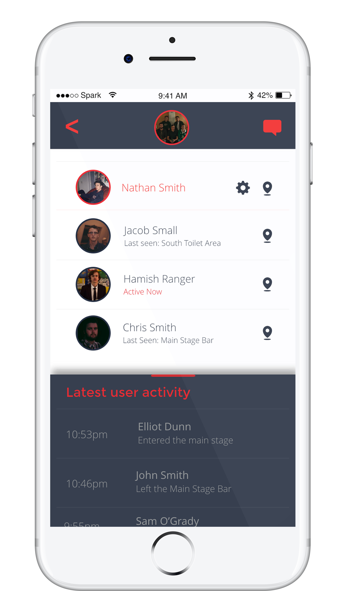
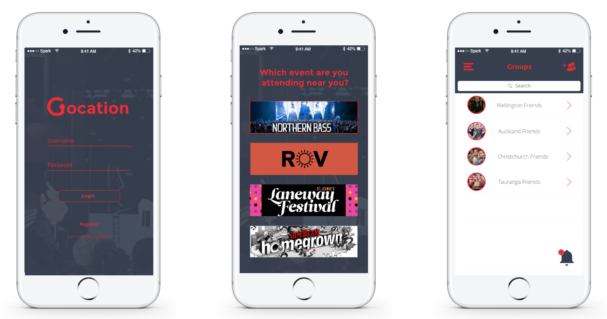
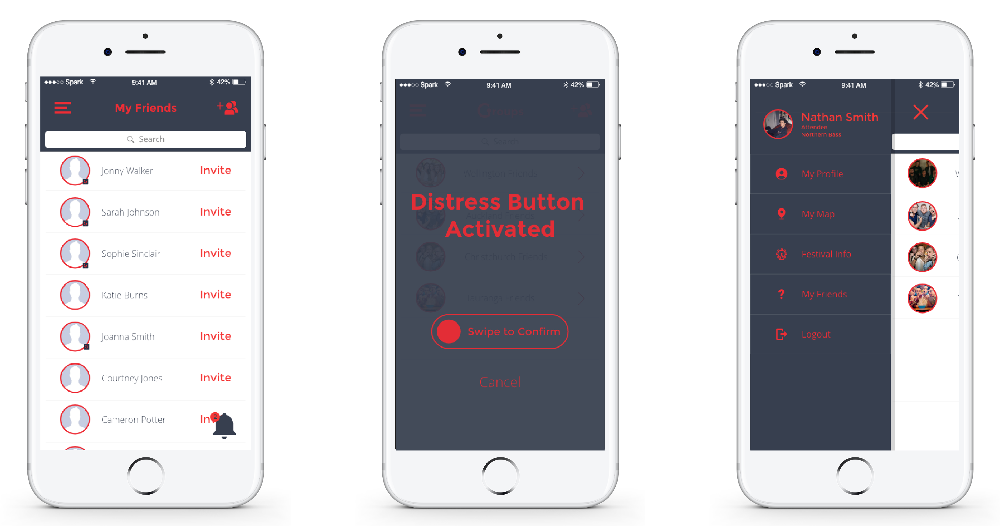
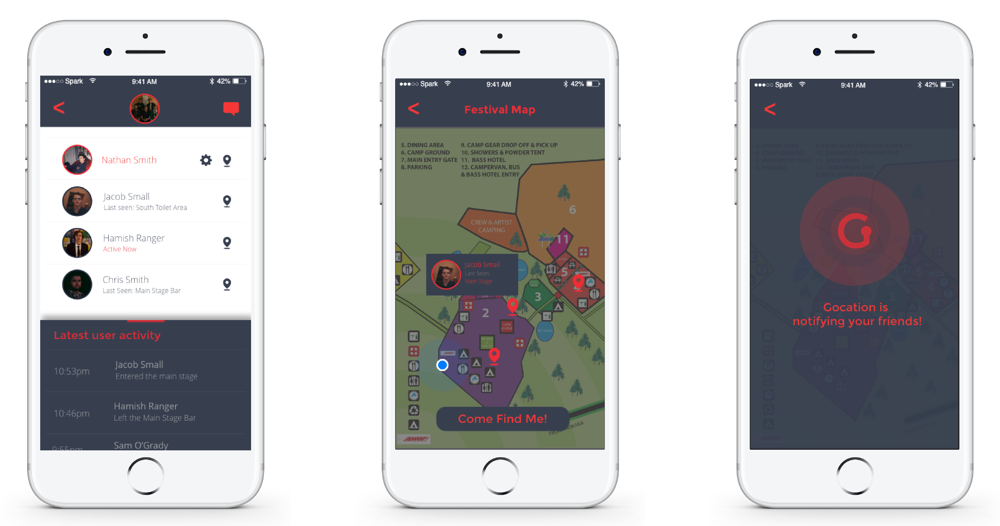
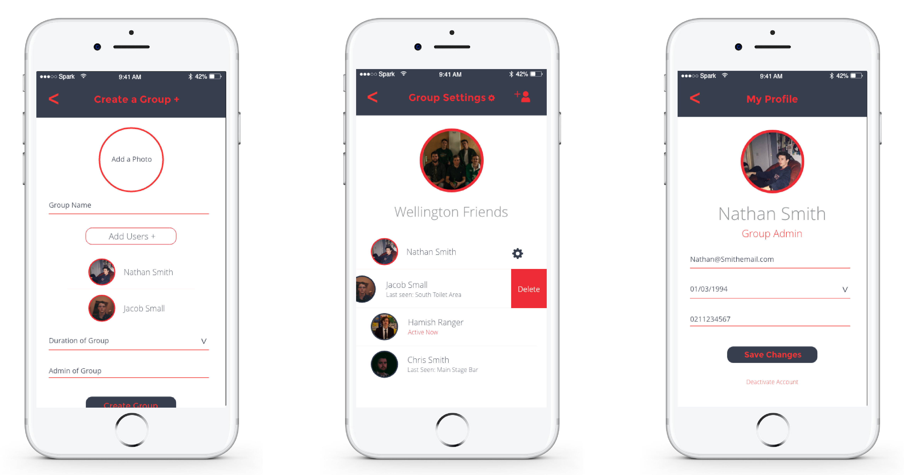
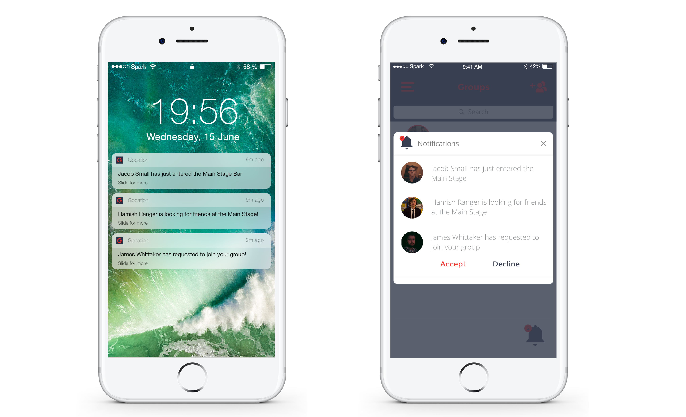

Gocation
Find Your Friends
Again.


Gocation is a mobile app that is aimed at utilizing the beacon technology that the Wellington City Council, currently use for their BlindSquare app to trace attendees at festivals and large events. The basic idea is that users can either download the native app or access it through the phones browser, before they attended the event. They would then login with their social media account. The data gathered from this will be full name, email address, profile image, age and phone number if available. This will then be stored in the app under the users account. After logging in the permissions that will need to be accepted will be location data and Bluetooth.
Beacons will be placed at all major points of interest around the festival or large event. For example, at the main entrance, entrances to all stages, entrances to toilet sections, bar and food areas and entrance to campgrounds. There will be two beacons at every point. One will be placed before the gate and one placed after. This way the app will be able to know which direction the user is walking in and report back to the group homepage. The beacons will be low powered, possibly solar, and connected to a central offsite database. The app will then be hooked up to this database aswell.
The image on the right is an example of an open-source beacon system known as "Eddystone", which is similar to the WCC system.
The first page after logging in is the “group homepage” Here users can create a new group or join an existing group. To create a new group, users are able to search via Facebook friends to invite them to the group, or see people who are near to each other, using the same app. (similar to Apple’s airdrop feature). To join a group, users can see a list of the groups nearby or wait for an invitation from the groups creator. Users will get a push notification when invited to a group and are then able to accept or decline. Users can be part of more then one group. On the group homepage, users are able to see a list of all groups they are apart of, then click on them to see a list of members. Each group can have a maximum of 10 members.
At the bottom of the group homepage, there will be a real time list of all of the most recent movements within the group.
After clicking on the group on the groups homepage, the list of members in the group with profile pictures will appear on the next page. Next to each name, will be an indicator showing whether the person is online or not. The user can go deeper by tapping on the name of the member, bringing to the profile of the member. This page will show the profile picture, phone number, when they were last online and a list of all their recent activity within the event or festival. This will be presented in a table form showing where their recent movements have been and which direction they were moving.
Headings and Titles
Paragraph and Body
This shows the process of logging into the app. First the user must login with their username and password, optionally if they are an event organiser, they can tap the button at the bottom. This will then take them to the event page. Once the event is selected, the user is brought to the group home page, where they can see a list of their groups created.
The first mockup is an example of the "friends" page, where the user would be able to invite and add current facebook friends to groups
If a user needed to use the distress feature all they would on any page in the app, would be to tap 3 times on the screen. A slider would then appear in the middle of the screen asking if the user would like to enable the distress button. There will also be an option to decline this in case of a user accidently activated it. The distress button would then send another push notification to all members of the current group as well as notification to festival security and emergency services. Security and group members would then be notified of the current location of the distressed user.
The last mockup is an example of the pullout menu with links to all the most prominent feature of the app.
Group messaging will also be available, by clicking on the specific group on the groups homepage, then clicking the message icon in the top right corner on the list of members. This will then bring up a messaging application.
This series of mockups shows the steps in which a user would find another user using the the map feature. By clicking on the map icon on the group homepage, users will then be able to see the rough position of the user. By clicking the "Come Find Me" button, this will send out a notification to all other friends in the group
Group settings are customizable only by the admin or creator of the group. Settings that are able to be changed are members of the group, admins can add or remove members. They can also change the group’s name, and the active time of a group. By default a group will only be active for 24 hours, this can be changed to 48 hours 72 hours or forever.
These play a vital role in the function of the app. The aim of the app is not to be a traditional mapping app such as google maps but rather an informative location finder. When a user is part of a group, everyone in the group will get a push notification whenever a member in the group passes through a beacon gate. Push notifications will be on by default however users are able to turn push notifications on and off to prevent annoyance and are then able to see a full history of member movements on the group homepage.
Claudia is currently studying a Bachelor of Commerce at Victoria, majoring in Marketing. She works at a marketing agency part-time as a social media intern. She enjoys going out clubbing with her friends on weekends and does ballet. When attending large events she often finds it it difficult to stay in touch with here friends, often due to poor cell-phone service.
Jason is an event coordinator, he organises and manages medium to large scale events, mainly specialising in EDM festivals. He is responsible for making sure all attendees have a safe and enjoyable time at his events and he is always looking for ways to improve their experiences, whether it be security, efficiency or entertainment.
All icons obtained via creative commons from The Noun Project
Northern Bass Promotional Information (Logo, Set Timetable, map etc.) - Thanks to Northern Bass
iPhone 7 Mockups Courtesy of Pixaden.com
Framework Provided by Bootstrap
Thanks to Chris Coiyer for the Smooth ScrollingChris Coiyer's Codepen
Thanks to Chris Coiyer for the Smooth ScrollingChris Coiyer's Codepen
Thanks to Erik Larson for Fade-in on Content Scroll (Jquery)Erik Larson Content Fade-in
Thanks to GreatSimple.io for the use of the IOS 10 UI Kit Great Simple.io
Made with love by Billy Harris MDDN 352 Mobile Media - Project 1